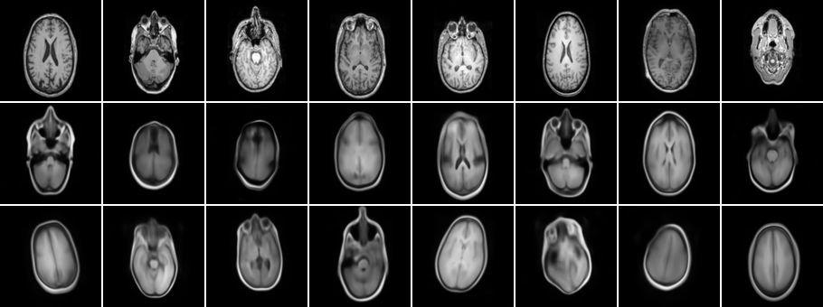
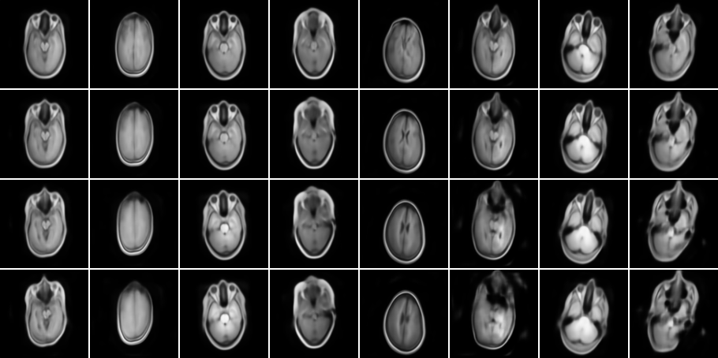
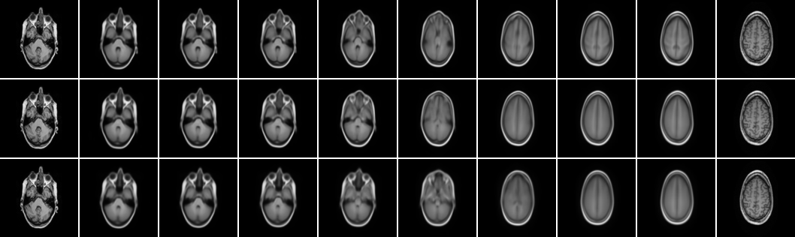

Generation and Interpolation
Now the fun part: images that don't exist. We'll keep three kinds of images strictly apart, sample new ones, walk in a straight line between two images, and then measure honestly how realistic the generated images are.
By the end of this chapter you will know
- the difference between real, reconstructed and generated images, and why it matters;
- how sampling temperature and the choice of sampler change the results;
- what latent interpolation shows about a latent space, and how FID measures realism.
1.Real, reconstructed, generated
These three words get mixed up a lot, so let's fix them before looking at any picture:
| kind | where it comes from | what it tests |
|---|---|---|
| real | a sample from the dataset | nothing; it's the reference |
| reconstructed | real image → encoder → z → decoder | how much the code preserves |
| generated | a new random z → decoder (no input image at all) | whether the model learned the whole data distribution |
A model can reconstruct beautifully and still generate garbage (the plain AE in chapter 6). So whenever you see a "VAE result", ask which of the three it is. Every figure on this site carries one of these badges.
Real vs generated brains (d = 128)
real generated
2.Two ways to sample a code
To generate, we need a random z in the right region of latent space. There are two ways:
- From the prior, ε ~ N(0, I): the VAE way. It only works if training kept the codes near N(0, I), which the KL term does.
- From a Gaussian fitted to the training codes: encode all training images, compute the mean and covariance of their codes, and sample from that. This gives the plain AE a fair way to generate (Ghosh et al., 2020), and it works for the VAE too.
3.Temperature: how far from the centre
A common knob is temperature T: sample z = T·ε instead of ε. T < 1 stays near the centre of the prior, where the model is most confident. T > 1 wanders further out.
Temperature sweep (VAE β=0.1, d = 16, the same ε in every row)
generated
Lower temperature looks "cleaner" to the eye, but it is not better. On CelebA, going from T = 1.0 to T = 0.7 made FID worse at every latent size from 8 up (for example 77 → 107 at d = 64), because the samples lose variety and FID punishes that.
4.Walking between two images
Take two images, encode them to z₁ and z₂, and decode points on the straight line between them:
If the latent space is well organised, the decoded path morphs smoothly and every middle image looks plausible. If it has gaps, the path crosses them and you see garbage halfway. Here are two real IXI slices, one low and one high in the head, interpolated in all three d = 128 models.
Real → real interpolation (IXI, d = 128)
ends: real middle: decoded
Face → face interpolation: AE vs VAE (CelebA)
generated faces only5.How realistic are the samples? FID
Looking at pictures is not enough, so I measured realism with the Fréchet Inception Distance. FID passes thousands of real and thousands of generated images through a pretrained image network (Inception-v3), fits a Gaussian to the features of each set, and measures the distance between the two Gaussians:
A raw FID number means little on its own, so I also computed a real-vs-real floor: FID between two different sets of real test images. That's what "indistinguishable" looks like: 5.6 on IXI and 3.0 on CelebA.
FID of generated samples vs latent size
up to 10,000 images per setFailure analysis
- Out-of-distribution codes. The AE fed plain N(0, I) codes produces broken heads (Figure 6.1, row 1). It isn't the decoder's fault; the codes are where it was never trained.
- Blur everywhere. Same pixel-wise loss as the reconstructions, so generated images are just as smooth: no cortical folds, no hair texture.
- High temperature breaks anatomy (Figure 7.2, T = 1.3): skulls with odd shapes, mixed-up levels.
- β = 1 drifts in colour during interpolation on faces (Figure 7.4): its compressed codes lose colour detail.
Key takeaways
- Keep real, reconstructed and generated apart: they answer different questions.
- Generation = sample z in the right region, then decode. The VAE uses N(0, I); an AE needs a fitted Gaussian.
- Lower temperature looks cleaner but loses variety; FID gets worse.
- Interpolation is a direct test of latent-space quality. FID says all these models are still far from real images.
References
- Ghosh et al. (2020). From Variational to Deterministic Autoencoders. ICLR.
- Heusel et al. (2017). GANs Trained by a Two Time-Scale Update Rule Converge to a Local Nash Equilibrium (FID). NeurIPS.
- White (2016). Sampling Generative Networks (spherical vs linear interpolation). arXiv:1609.04468.
- Kingma, Dhariwal (2018). Glow: Generative Flow with Invertible 1×1 Convolutions (temperature sampling). NeurIPS.